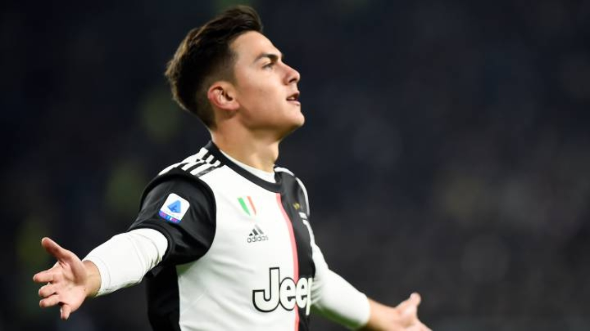

Rosario Central
"Probablemente se tome la primera fecha de la Copa Superliga porque estaba por reglamento y nosotros nos tenemos que acomodar a eso". Rosario Central, en ese sentido, es el primer equipo en quedar afuera de la clasificación a la Sudamericana
La pelota se para
El fútbol argentino se suspendió oficialmente este martes. El anuncio fue efectuado por Matías Lammens, ministro de Turismo y Deportes, a través de una carta que le envió a la Superliga y a la AFA

Paulo Dybala da positivo por covid-19
El delantero de la Juventus Paulo Dybala dio positivo por coronavirus por cuarta vez en seis semanas, le dijo a CNN una fuente cercana al jugador.
Futbol durante el Coronavrus
“Llegamos justo y nos vamos apenas termina. Entrenamos de a cinco y nos cambiamos en vestuarios distintos. Recién nos encontramos en la cancha y hacemos ejercicios a metro y medio de distancia. Nos bañamos en casa”, le dijo el cordobés Mateo Klimowicz a Mundo D, jugador del Stuttgart.